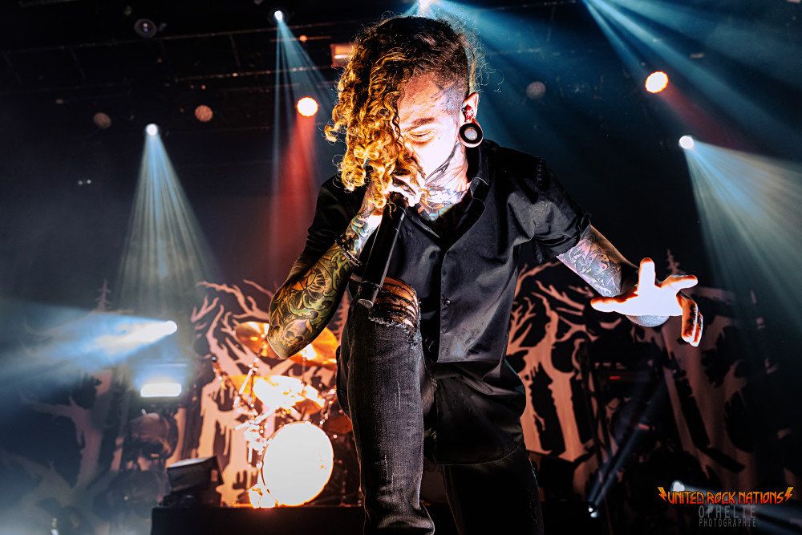

Lorna Shore

Lorna Shore est un groupe de deathcore originaire des États-unis, connu pour son univers sombre et son approche musicale extrême.
Le groupe s'est rapidement imposé sur la scène metal moderne grâce à une identité sonore puissante et atmosphérique, mêlant brutalité et technicité.
Le style de Lorna Shore se caractérise par des compositions intenses, des rythmes rapides et une ambiance très marquée.
Le groupe explore des sonorités sombres et cinématographiques, donnant à sa musique une dimension immersive qui dépasse le simple cadre du metal extrême.
Au fil des années, Lorna Shore a su évoluer et affirmer son identité, devenant une référence dans le deathcore contemporain. Sa musique s'adresse à un public amateur de metal extrême, tout en restant reconnaissable par son atmosphère unique et travaillée.
- Origine : États‑Unis
- Genre : Deathcore
- Année de formation : 2009